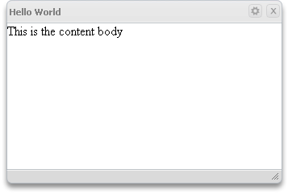

WCL developer guide
24th April 2012: Please note
Starting with Opera 12, Opera Widgets will be turned off for new users and completely removed in a later release. If you're interested in building addons for Opera, we recommend going with our extensions platform — check out our extensions documentation to get started.
Contents
- Introduction
- Creating a widget with WCL
- Switching skins
- WCL API methods and events
- Adding more content
- Working with chrome
- Managing WCL button events
- Resizing the widget using WCL
Introduction
Opera provides a library for the simple creation of chrome for widgets. This library makes it relatively painless to reuse code for widgets of different resolutions, defining different styles for each. The example widgets work identically on both portrait and landscape modes on a mobile device and on a desktop computer. The only difference is the style sheet that is applied. The library also manages resizing of widgets, so authors do not have to implement this themselves in every widget. On mobile devices it’s best to enable full-screen mode to take full advantage of the available screen.
Creating a widget with the WCL
A bare bones widget that uses WCL could look like this:
<!DOCTYPE html>
<html>
<head>
<title>Hello World</title>
<script type="text/javascript" src="scripts/chrome.js"></script>
<link href="basic.skin/skin.css" rel="stylesheet" type="text/css" media="screen" />
</head>
<body>
This is the content body
</body>
</html>The basic skin and the chrome.js files are provided by Opera. Developers are free to modify them as needed and to add more skins.
When the widget starts, the chrome.js file creates the extra markup needed for the chrome. The chrome consists of a top bar, bottom bar, event handlers for resizing and buttons for config and close. The above code would produce this screenshot with the default skin:

Switching skins
You can have as many skins as you like for any WCL widget by adding elements for external style sheets with the type “alternate stylesheet” and a title. Alternate style sheets are not automatically applied when the page loads. A simple example could look like this:
<!DOCTYPE html>
<html>
<head>
<title>Hello World</title>
<script type="text/javascript" src="scripts/chrome.js"></script>
<link title="basicskin" href="basic.skin/skin.css" rel="stylesheet" type="text/css" media="screen" />
<link title="fancyskin" href="fancy.skin/skin.css" rel="alternate stylesheet" type="text/css" media="screen" />
<script>
window.onload = function() {
// check the size of the viewport and switch skin if
// it is big enough
if (window.innerWidth>340) {
// disable current stylesheet
WidgetChrome.disableStylesheet("basicskin");
// enable the fancy skin
WidgetChrome.enableStyleSheet("fancyskin");
}
}
</script>
</head>
<body>
This is the content body
</body>
</html>We disable the basicskin so that all styles specified in that skin are removed and then we apply the fancyskin.
WCL API methods and events
The WCL API is available at http://dev.opera.com/libraries/chrome/docs/WidgetChrome.dml/.
Adding more content
When you add WCL to your widget, it takes all the content from the body and places it inside the chrome. When you want to add or remove content from the
elements, there are no special rules that you need to follow. As long as you are using IDs to get the elements, you can add and remove elements as you would
normally do without using WCL. For example, if there is a DIV with id test you can still use document.getElementById("test")
as normal.
There are times when you want an element to use all the available area inside the widget. You can use the helper
function WidgetChrome.autoResize to help you resize the element to occupy the complete section in the middle and to resize automatically as the widget
is resized.
Example: There is a DIV with the id pnlConfig. To make sure that it resizes and takes up all the available area
and resizes automatically, we use the helper function WidgetChrome.autoResize("pnlConfig"); in the onload event.
Working with chrome
There are times when you want to customize elements in the chrome.
Lets start with elements that you don’t want to add. Add the attribute data-not-chrome-content="true" to those elements. The elements with
this attribute will not be added inside the widget chrome.
Example
<div data-not-chrome-content="true"> </div> To add extra elements to the chrome, such as another button, use the
API WidgetChrome.addElementToChrome.
HTML example
<button id="btnMinimise" data-not-chrome-content="true">Minimise</button>
JavaScript example
WidgetChrome.addElementToChrome("btnMinimise");
We make sure that the element is not added inside the chrome by setting data-not-chrome-content="true". On the onload event, we call the function to add the button to the
chrome. Once you put the button into the chrome, you must still position it with CSS.
Managing WCL button events
There is only one event WidgetChrome.ButtonConfig.onclick that you need to handle if you use WidgetChrome. If you want to handle the
event when a user clicks the close button, you need to load the function WidgetChrome.ButtonClose.onclick.
WidgetChrome.ButtonConfig.onclick = function(event)
{
//Do something when the config button clicked.
}
WidgetChrome.ButtonClose.onclick = function(event)
{
//Do something when the close button is clicked.
}
You can also use addEventListener. You can get the reference to the button elements and use addEventListener on them. WidgetChrome.ButtonConfig will give the reference to the config button, and WidgetChrome.ButtonClose will give the reference to the close button.
WidgetChrome.ButtonClose.addEventListener("click", function() {
window.close();
}, false);
If you don't need the config button, you can use the following methods to hide the button:
- Using CSS
#btnConfig { display: none; }- Using JavaScript
WidgetChrome.ButtonConfig.style.display = "none";
Resizing the widget using WCL
To resize a widget, call window.resizeTo— then, call WidgetChrome.redraw() so that the chrome is repainted.
If you want to make a widget fullscreen, you can use the helper function WidgetChrome.setFullScreen().
You can set the minimum height and width of the widget using WidgetChrome.minHeight and WidgetChrome.minWidth. By default, the minimum width is 50px and height is set to 100px, so that a user doesn't resize it and make the widget unusable.
noneThis article is licensed under a Creative Commons Attribution, Non Commercial - No Derivs 2.5 license.
Comments
The forum archive of this article is still available on My Opera.
No new comments accepted.